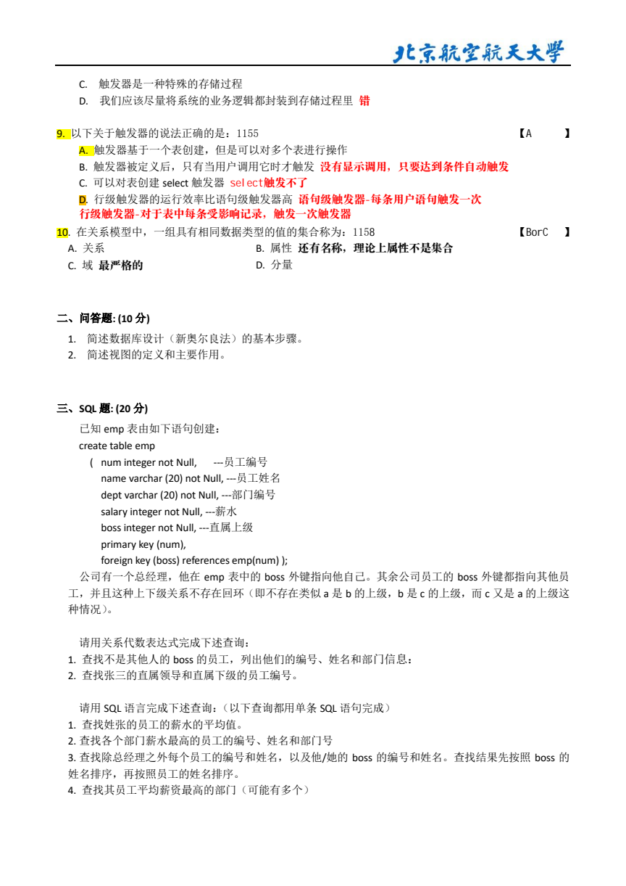

Day 2 数据库 SQL 连接与嵌套加厚讲义
这个页面只做 Day1 后的第一层加厚：连接、外连接、自连接、子查询、全部/所有、每组最高。暂时不进范式、事务、ER 图。你先把 SQL 大题最常见的“跨表和嵌套”打稳。
1. 今天地图：为什么 Day2 先学连接和嵌套
Day1 你学的是一张表怎么筛行、选列、分组。可考试里的 SQL 大题很少只给一张表。学校数据通常拆在很多表里：学生信息在 Student，选课成绩在 SC，课程名在 Course。题目一问“查询学生姓名、课程名和成绩”，你就必须跨表。
| 表 | 里面放什么 | 常见字段 | 它和谁相连 |
|---|---|---|---|
| Student | 学生本人信息 | Sno, Sname, Sdept | 用 Sno 连 SC |
| SC | 谁选了哪门课，成绩是多少 | Sno, Cno, Grade | 用 Sno 连 Student，用 Cno 连 Course |
| Course | 课程本人信息 | Cno, Cname, Cpno, Credit | 用 Cno 连 SC；Cpno 可能指向 Course 自己 |
| emp | 2023A 风格员工表 | num, name, dept, salary, boss | boss 指向 emp(num)，所以常考自连接 |
2. 连接题脑内画图：先搭桥，再写 SQL
连接题不是一上来背 JOIN 语法。你先在脑子里画三样东西：结果要哪些列、这些列在哪些表、表和表靠哪条桥连起来。桥找错，SQL 再漂亮也会错。
INNER JOIN：两边都匹配才留下
它适合“只查已有关系”的题。比如查学生已选课程成绩，没选课的学生本来就不是答案。
启动句：我要把 A 表和 B 表按共同键对齐。
LEFT JOIN：先保住主体名单
它适合“没有也要显示”“找没有记录的对象”。左表是主名单，右表没有匹配就补 NULL。
启动句：先保留所有主体，再看右表哪边是 NULL。
自连接：同一张表扮演两个角色
不是两张表，而是一张表取两个别名。员工和老板都在 emp；课程和先修课都在 Course。
启动句：同一张表复制成两个角色，分别起别名。
子查询：先查一批东西，再用它筛
如果中文题天然分两步，就很可能是子查询。比如先查刘晨所在系，再查同系学生。
启动句：内层先得到条件集合，外层再筛答案对象。
| 中文题干 | 先翻译成人话 | SQL 模板 |
|---|---|---|
| 学生姓名、课程名、成绩 | 姓名在 Student，课程名在 Course，成绩在 SC，SC 是桥。 | Student JOIN SC JOIN Course |
| 没有选课的学生 | 答案是学生主体，SC 里没有匹配记录。 | Student LEFT JOIN SC ... WHERE SC.Sno IS NULL |
| 员工及其 boss 姓名 | 员工和 boss 都是 emp 的行，只是角色不同。 | emp E JOIN emp B ON E.boss = B.num |
| 选修全部课程 | 不存在一门课程这个学生没选。 | 双重 NOT EXISTS 或 COUNT(DISTINCT) |
| 各部门最高工资员工 | 先算每部门最高工资，再回 emp 找具体员工。 | GROUP BY 子查询 + 回表 JOIN |
3. INNER JOIN：只保留两边都匹配的行
JOIN 最朴素的人话是“把两张表按共同字段对齐”。比如 Student 表知道学生姓名，SC 表知道成绩。单独看 Student 没有成绩，单独看 SC 没有姓名，所以要把它们按学号拼起来。
FROM A JOIN B ON A.共同字段 = B.共同字段
这段不要先背。逐行读：
FROM Student S：先拿学生表，并给它起短名 S，后面写起来不累。JOIN SC ON S.Sno = SC.Sno：把学生表和选课表按学号对齐。一个学生的姓名和他的选课成绩终于站在同一行里。WHERE SC.Cno = 'C1'：只要课程号是 C1 的行。SELECT S.Sname, SC.Cno, SC.Grade：最后只显示姓名、课程号、成绩。三张表也不神秘，就是多搭一座桥：
Student JOIN Course，却没有中间的 SC。学生和课程不是直接相连的，选课表 SC 才是桥。
4. LEFT JOIN：没有匹配也要保留主体
INNER JOIN 像两边名单点名，双方都到场才留下。LEFT JOIN 像老师拿着左边那张主名单点名：左表的人必须都保留，右表没匹配就用空值补上。
这题在问“没有选课的学生”。你要先保留所有学生，再看哪些学生在 SC 里找不到匹配。找不到时，右表 SC 的字段会变成 NULL，所以用 WHERE SC.Sno IS NULL 把他们筛出来。
5. 自连接：一张表扮演两个角色
自连接不是新表，而是“同一张表复制两份角色”。2023A 的 emp 表里，员工和上级都在 emp 这张表：员工 E 的 boss 字段，存的是上级 B 的 num。所以你要把 emp 当成员工表 E 和老板表 B。
E.boss = B.num 表示“员工 E 的 boss 编号，等于某个员工 B 的编号”。E.num <> E.boss 用来排除总经理这类 boss 指向自己的行。Course 表也可能自连接。比如课程 C1 的先修课编号 Cpno 指向另一门课程的 Cno。查“先修课的先修课”时，本质上就是课程、父课程、祖父课程三个角色。
6. 子查询：先查一个集合，再拿它做条件
子查询就是“一个查询包在另一个查询里面”。它不是为了显得高级，而是因为很多中文题天然分两步：先找到一批东西，再用这批东西筛另一批东西。
例：查询与“刘晨”在同一个系的学生。
人话是：先查刘晨在哪个系，再查哪些学生的系属于这个结果。这里内层结果通常只有一个系，但写成 IN 很自然，因为你把它当成一个集合。
例：查询没有选过任何课的学生，也可以不用 LEFT JOIN，用 NOT EXISTS。
SELECT 1 是什么意思？在 EXISTS 里，数据库只检查“有没有行”，不关心你 SELECT 哪一列。所以写 1 表示我只要存在性，不要具体值。
7. “全部/所有”问题：数据库 SQL 里最像离散的一块
题目出现“选修了全部课程”“购买了所有商品”“访问了所有城市”，你要警觉。这不是普通的多表查询，它在表达一个全称条件：对每一门课程，这个学生都选了。
6.1 计数法：先用朴素直觉拿分
逐句翻译：把学生和选课表连起来；按每个学生分组；数这个学生选过的不同课程数；如果等于课程表里的总课程数，就说明他选了全部课程。
6.2 双重 NOT EXISTS：别背，先翻译
NOT EXISTS：如果不存在这条记录，就表示“学生 S 没选课程 C”。NOT EXISTS：不存在一门课程 C，使得学生 S 没选它。8. 每组最高：先算最高值，再回表找人
这是 2023A 风格 SQL 的核心套路。题目问“各部门薪水最高的员工编号、姓名和部门号”。你不能直接写 SELECT dept, MAX(salary), name GROUP BY dept，因为 name 不是分组属性，也不是聚合结果。最高工资和“拿这个工资的人是谁”是两步。
9. Day2 题卡：先写题眼和骨架，再看答案
每题先写四样东西：输出列、来源表、连接/嵌套条件、SQL 骨架。你可以写得不完整，但不要直接展开答案。训练目标不是“看懂答案”，而是“考场上能启动”。
题卡 1：三表连接入门
已知 Student(Sno, Sname)、SC(Sno, Cno, Grade)、Course(Cno, Cname)。查询每个学生的姓名、课程名和成绩。
展开答案和丰满解析
题眼：姓名在 Student，课程名在 Course，成绩在 SC，所以三张表都要用。
桥：Student 和 SC 靠 Sno；SC 和 Course 靠 Cno。不要试图让 Student 直接连 Course，中间缺了选课事实。
迁移：凡是题目同时要“人名 + 课程名 + 成绩/分数”，先想 Student -> SC -> Course 这条链。
题卡 2：没有选课的学生
查询没有选修任何课程的学生学号和姓名。
展开答案和丰满解析
写法一：LEFT JOIN。
写法二：NOT EXISTS。
题眼：“没有”意味着答案对象可能在右表没有记录。普通 JOIN 会把没有选课的人直接删除，所以常用 LEFT JOIN 保留左表，或者用 NOT EXISTS 表达“找不到选课记录”。
常见坑：写 WHERE SC.Cno = NULL 是错的，判断空值要用 IS NULL。
题卡 3：员工和 boss 姓名
已知 emp(num, name, dept, salary, boss)，boss 外键引用 emp(num)。查询除总经理之外每个员工的编号、姓名、boss 编号和 boss 姓名。
展开答案和丰满解析
题眼：员工和 boss 都在 emp 表里。boss 字段不是老板姓名，而是老板编号，所以要再回到 emp 表查这个编号对应的 name。
角色：E 表示当前员工，B 表示作为老板出现的那位员工。两个别名让同一张表变成两个角色。
迁移：课程的先修课、组织结构的上级、评论的父评论、员工的推荐人，都可以是自连接题。
题卡 4：选修全部课程，计数法
查询选修了全部课程的学生学号和姓名。先用计数法写。
展开答案和丰满解析
题眼：“全部课程”可以先用数量理解：如果课程表有 N 门课，一个学生选过的不同课程数也是 N，那么他没有漏课。
为什么 DISTINCT：如果数据里可能出现重修或重复记录，不去重会把同一门课数多次。题目明确没有重修时也可以不写，但写 DISTINCT 通常更稳。
局限：如果课程表有附加条件，比如“全部必修课”，内层总数和外层统计都要加同样条件，不能只改一边。
题卡 5：选修全部课程，双重 NOT EXISTS
同样查询选修了全部课程的学生。现在用双重 NOT EXISTS 写，并把人话翻译写出来。
展开答案和丰满解析
标准人话：不存在一门课程 C，使得学生 S 没有选这门课程 C。
拆解：最里面 EXISTS 检查“学生 S 选了课程 C”这件事是否存在；中间 NOT EXISTS 得到“学生 S 没选课程 C”；最外层 NOT EXISTS 否定“存在一门漏选课程”。
迁移：这是关系除法的考试表达。买了所有商品、完成所有任务、访问所有城市，都可以先说成“不存在一个目标对象没有被完成”。
题卡 6：各部门最高工资员工
已知 emp(num, name, dept, salary, boss)。查询各部门薪水最高的员工编号、姓名和部门号。
展开答案和丰满解析
题眼：“各部门”提示 GROUP BY dept；“最高工资”提示 MAX(salary)；“员工编号和姓名”提示必须回表找完整员工行。
为什么不能直接 SELECT name：分组后每个部门变成一组，组里可能有很多 name。MAX(salary) 只是这个组的最高工资值，不会自动告诉你是谁拿了这个工资。
并列处理：这个写法会保留并列最高的所有员工，比 LIMIT 1 更严谨。
10. Day2 最小闸门：学完别急着翻页
输入会保存在本机浏览器。
来源核对：数据库资料截图只放这里，不作为主学习内容
这些截图来自本地数据库复习资料和 2023A 参考卷渲染页，用来核对题型方向。主讲义已经把截图内容拆成可学习的题眼和模板。
